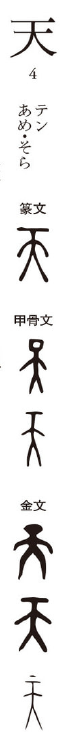

天

Kun: amatsu, ame, ama | On: ten
heaven ・ sky
Explanation
In early inscriptions, 天 does not derive from the combination of 一 and 大, as later commentators suggested. Instead, the oracle bone and bronze forms clearly depict the crown of a human head, emphasizing the summit or highest point (巓). This sense of the “topmost” naturally extended to mean the overarching sky. The character also carried ritual and political weight: in Shang times, tian was invoked as a personal deity, akin to 帝, while in Zhou usage it was elevated into an abstract principle, the supreme authority that conferred the Mandate of Heaven. Thus 天 signifies both the highest point above and the divine order governing the world.